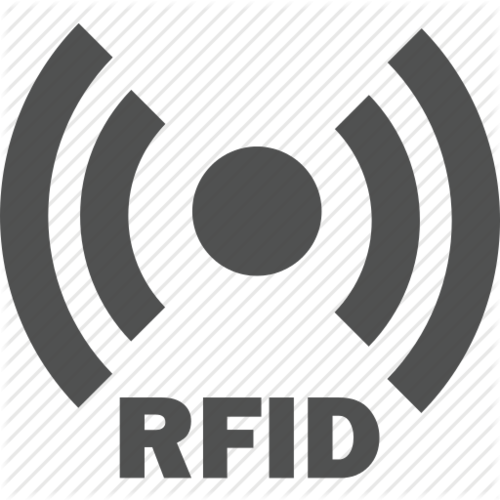

Smart Wallet
Introdução
Smart Wallet é um projeto que auxilia no processo de compra mostrando pro cliente o que está dentro do seu carrinho e informações como o preço de cada produto e o total da compra.
É constituído por um circuito implantado em um carrinho de compras comum, que possibilita ao consumidor obter grande parte das informações gerais e específicas de cada produto.
Objetivos
De forma geral o projeto Smart Wallet visa auxiliar o processo de compra em estabelecimentos de consumo diversificado, fornecer ao cliente o máximo de informações possíveis, e evitar transtornos no ambiente econômico. O projeto envolve diversas tecnologias que devem ser estudadas para sua aplicação, todas são de conhecimento extracurricular e necessitam de empenho e dedicação para seu total aprendizado.
Desolvimento
Ao longo do projeto será necessário a utilização de várias tecnologias para alcançar os objetivos estabelecidos, entre estas tecnologias podemos citar o RFID que é uma identificação por radiofrequência, desenvolvimento na plataforma android e a aplicação de conexões remotas.
Dado como explicado o funcionamento do sistema, será citado a necessidade da utilização de cada tecnologia empregada e como esta serão aplicadas ao referido projeto.
O RFID será responsável por permitir a transmissão de informações através de uma identificação única por radiofrequência que será emitida de uma “TAG” (dispositivo emissor de ondas de rádio) e lida por um módulo RC-522 (dispositivo receptor e identificador de ondas de rádio), possibilitando uma identificação própria para cada produto.
Arduino
- > Arduino Mega 2560
- > Módulo RFID-RF522
Foi necessário o desenvolvimento em arduino para o projeto Smart Wallet. O referido projeto conta a utilização de um microcontrolador Arduino MEGA 2560 que será responsável pela parte física da transmissão de dados, o arduino presente também serve para quantizar as energias necessárias a serem enviadas para cada componente do circuito, sendo de extrema importância, para o pleno funcionamento do projeto, a utilização de boas práticas para montagem de circuitos elétricos.
Para que o projeto funcione como o esperado também foi necessário a aquisição de um módulo capaz de funcionar como receptor de ondas de rádio frequência e que traduza essas informações para o micro controlador Arduino poder manipular os dados recebidos. Utilizamos um Módulo RFID-RC522 que atua como o módulo mais utilizado para testes semelhantes, também é o mais acessível em termos financeiros
Android
- > BuyFragment, extensão de Fragment
A principal Classe existente na aplicação é denominada BuyFragment. Esta é uma Classe que se estende da Classe Fragment do Java. Sua funcionalidade é agir como uma tela independente que pertence a um grupo. Suas funções são gerar uma conexão com o Arduino através do módulo Bluetooth para receber o código do produto, estabelecer outra conexão com um Webservice para utilização do código e retorno das informações do produto e tratamentos de todas as informações para inflar uma lista (RecyclerView).
Para que haja uma conexão com o Arduino, a classe acessa os componentes Bluetooth do aparelho e realiza uma Thread de conexão, chamada de ConnectionThread, responsável por criar uma porta Socket entre Arduino e Android. Essa conexão se mantém com um objeto Handler que comunica uma AsyncTask.
Após ser iniciada com uma chamada feita no Handler, uma tarefa assíncrona começa a conexão e transferência de dados com o Webservice responsável por acessar o banco de dados. A classe referida envia ao Webservice o código obtido pelo Arduino e aguarda o retorno de um JSONArray, que será convertido em um JSONObject e posteriormente preencherá o objeto modelo de produto. Ainda nessa execução, o adaptador responsável por controlar o RecyclerView é notificado das alterações e realiza a execução para inflar a lista com o novo produto.
Rfid
A Origem
A tecnologia RFID tem suas bases na Segunda Guerra mundial, onde o sistema de radares estava por caminhar lentamente, surgiu um problema perante a identificação das naves, não era possível diferenciar os aviões aliados dos inimigos. Então percebeu-se que ao girar o avião em sem próprio eixo o sinal de rádio emitido era modificado permitindo então a identificação dos aviões aliados alemães, este foi o primeiro sistema de identificação por radiofrequência.
Os ingleses desenvolveram um sistema para fazer essa identificação de maneira mais precisa, o sistema ficou conhecido como IFF (Identify Friend or Foe). O sistema funcionava da seguinte maneira: eram colocado aparelhos transmissores em cada avião, esses transmissores, ao receber sinal da torre de comando, transmitiam um sinal resposta permitindo a identificação de um sinal amigo.
RFID funciona de maneira semelhante. Um sinal é enviado a um transponder, o qual é ativado e reflete de volta o sinal (sistema passivo) ou transmite seu próprio sinal (sistemas ativos).
O Funcionamento da tecnologia
Um sistema de RFID é composto, basicamente, de uma antena, um transceptor, que faz a leitura do sinal e transfere a informação para um dispositivo leitor, e também um transponder ou etiqueta de RF (rádio frequência), que deverá conter o circuito e a informação a ser transmitida. Estas etiquetas podem estar presentes em pessoas, animais, produtos, embalagens, enfim, em equipamentos diversos.
Assim, a antena transmite a informação, emitindo o sinal do circuito integrado para transmitir suas informações para o leitor, que por sua vez converte as ondas de rádio do RFID para informações digitais. Agora, depois de convertidas, elas poderão ser lidas e compreendidas por um computador para então ter seus dados analisados.
Etiquetas RFID
Atualmente encontra-se dois tipos de etiquetas RFID: passiva e ativa.
- Passiva – Estas etiquetas utilizam a rádio frequência do leitor para transmitir o seu sinal e normalmente têm com suas informações gravadas permanentemente quando são fabricadas. Contudo, algumas destas etiquetas são “regraváveis”.
- Ativa – As etiquetas ativas são muito mais sofisticadas e caras e contam com uma bateria própria para transmitir seu sinal sobre uma distância razoável, além de permitir armazenamento em memória RAM capaz de guardar até 32 KB.